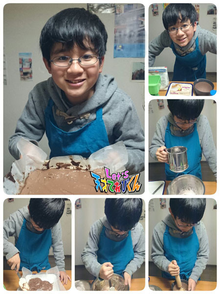

4月から○○年生になります！［辻村晃佑］
どうも辻村晃佑です！！
この前、初めてブラウニーを作ってみました！(ﾟ∀ﾟ)

複雑な工程などなく、
オーブンがあれば誰でもできる
とてもつくりやすいお菓子でしたo(^▽^)o
できあがったブラウニーを食べたら、
甘さが足りなかったので、
もうちょっと砂糖の量を多くしてもよかったかな？！
次は、マドレーヌあたりの小さめの焼き菓子を作ってみようかな(*´ω｀*)
お菓子作り、楽しい～～～！！
いや～
こんな僕ですけど、4月から2年生です！（中学だよ）
2年生になったら、後輩ができるのかー
今まで、その後輩だったけど、
いざ先輩になると、どうすればいいか不安だな～～
でも、クラス替えは楽しみです！
知らない人と同じクラスになるのは、とてもワクワクするからです。
中学1年は思い出に残る1年にできたから、中学2年も思い出に残る1年にしたいな～
2年生になっても、がんばりま～す！
投稿者:辻村晃佑 | 投稿時間:18時45分 | カテゴリ：てれび戦士 | 固定リンク
「どちゃもんDEキャラ弁」レシピ大公開！
広島どちゃもん・ぷうかと福岡どちゃもん・ちゃっちゃくちゃらから、どちゃもんキャラ弁のレシピが届きました。
ぷうか＞茶の間戦士のみんな、ひさしぶりじゃねー。
ちゃっちゃくちゃら＞「どちゃもんDEキャラ弁」見てくれたと？ばりおいしそーやろ。
ぷうか＞作り方を特別に教えちゃるけえ、作ってみんさいや。
●ぷうかキャラ弁
（※レシピはどちゃもん本体のみ。まわりのおかずは含まれません）

＜材料＞
じゃがいも（中）1個、パプリカ1/4個、にんじん1/4本、薄焼き卵1枚、マヨネーズ大さじ2、かに風味かまぼこ1本、ブロッコリー適量、スライスチーズ適量、のり適量、ハム適量、塩、コショウ
＜作り方＞
【土台】 じゃがいもをゆで、熱いうちに皮をむいてつぶす。粗熱が取れたら、マヨネーズ・塩・こしょうとあえてポテトサラダを作る。
【頭・足・しっぽ】 パプリカの種を除き、ぺティーナイフで顔・足・しっぽの形にカットする。
【目】 スライスチーズを白目の形にカットする。
【眉毛・黒目】 のりをハサミで眉毛と黒目の形にカットする。
【くちびる】 ハムをくちびるの形にカットする。
【ひれ】 にんじんを薄く切り、ひれの形にカットしてゆでる。
【着物】 ブロッコリーの先端を包丁で切る。かに風味かまぼこを細く裂く。のりをハサミで細長く切る。スライスチーズを細長く切る。
ポテトサラダをラップで包んで形を整え、ぷうかの土台を作り、ラップをはずして弁当箱に入れる。
その上に、薄焼き卵、チーズ、のり、ブロッコリー、かに風味かまぼこの順にのせて着物を作る。
パプリカで作ったひれと頭を順にのせ、その上にのり・チーズ・ハムを置いて顔を作り、かに風味かまぼこのヒゲをつける。
パプリカで作った足としっぽをつけて完成！
●ちゃっちゃくちゃらキャラ弁
（※レシピはどちゃもん本体のみ。まわりのおかずは含まれません）

＜材料＞
ごはん120g、梅干し（中）2粒、スティックチーズ1本、ハム1/4枚、のり1/6枚、スライスチーズ1/8枚、かに風味かまぼこ適量、薄焼き卵適量、にんじん適量
＜作り方＞
【土台・頭の梅の花】 梅干しの種を除き、1粒は粗みじん切り、もう1粒は花びらのような丸形4枚にカットする。
【髪・顔・帯】 のりをハサミで、髪・顔・帯の形にカットする。
【しめ縄】 スティックチーズを、ペティーナイフを使って、しめ縄のように形作る。
【手・めしべ】 スライスチーズを、つまようじを使って、手と、頭の梅の花のめしべの形に切る。
【ほっぺ】 ハムを、ストローで2枚くりぬく。
【着物のえり】 ハムを、幅5㎜長さ2㎝の短冊形2枚に切る。かに風味かまごこを細くさく。
ごはん40gをラップで包み、楕円形に握る。
残りのごはんに、粗みじん切りの梅干しを混ぜ合わせ、ラップに包み着物の形を作る。
ラップをはずし、梅ごはんが胴体、楕円形のご飯が頭になるよう、弁当箱に入れる。
それぞれのパーツをごはんにのせる。
薄焼き卵をストローで丸くくりぬき、その上に小さな長方形に切ったにんじんをのせ、のりとチーズで目をつけて頭の梅の花の横にのせる。
チーズと梅を使って、帯の模様をつけて完成！
ぷうか＞うちの体はポテトサラダで作っとったんじゃね。
ちゃっちゃくちゃら＞うちは梅の好いとーから、梅ご飯で作っちもらえてなんやかうれしか〜。
ぷうか＞どうじゃろ、わりかしみやすいじゃろ？
ちゃっちゃくちゃら＞他のどちゃもんのも考えちみるんも楽しかね。
ぷうか・ちゃっちゃくちゃら＞Let’sどちゃもんDEキャラ弁！
投稿者:未来人L | 投稿時間:18時40分 | カテゴリ：その他 | 固定リンク